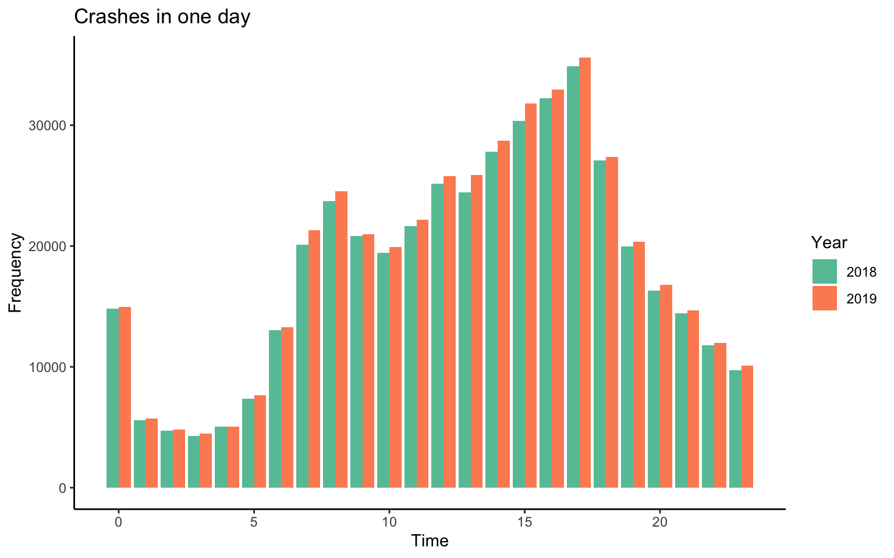
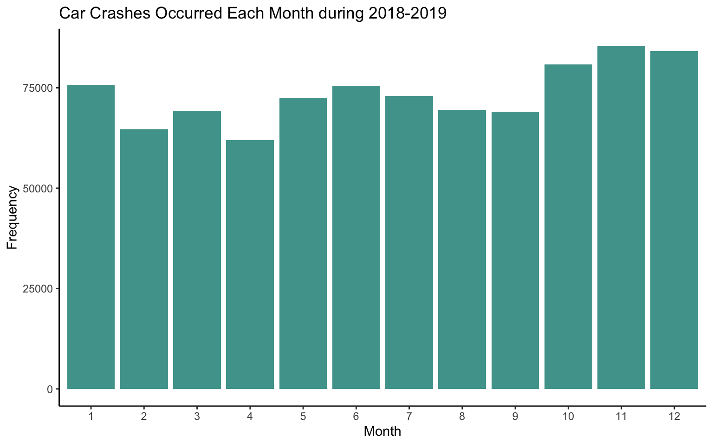
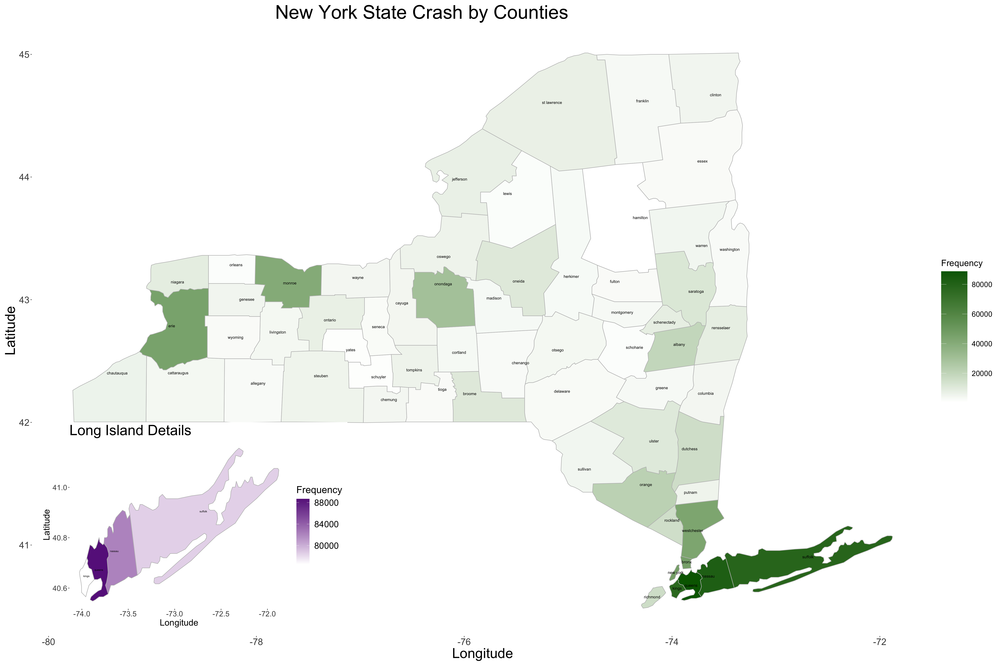
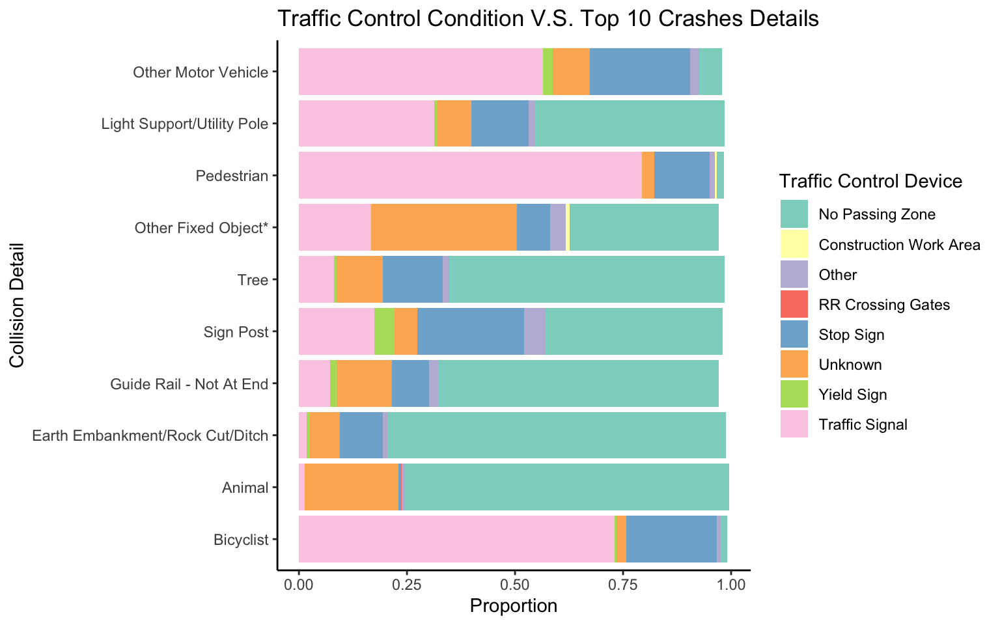
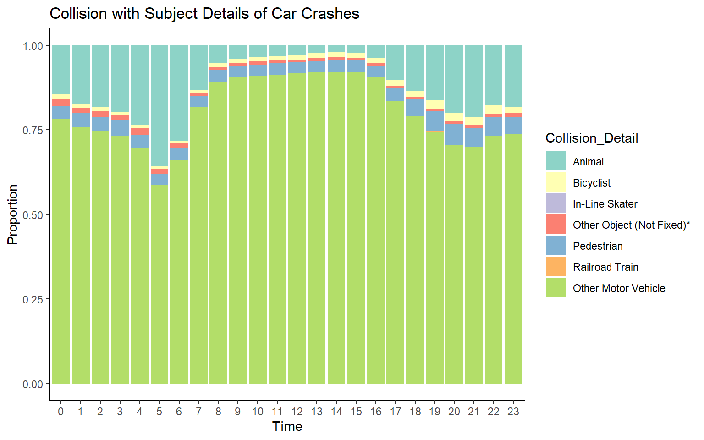
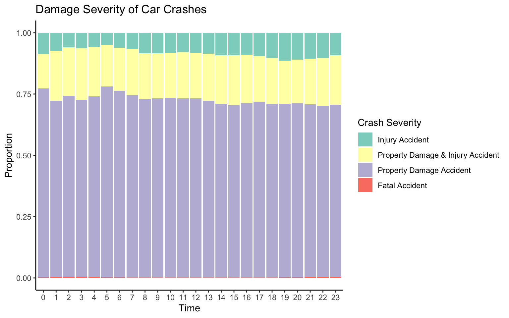

Chapter 5 Results
5.1 When
5.1.1 Time in Day
First, we explore when crashes happen the most, and the corresponding reasons.

Here is an overview of number of crash occur in 24 hours in 2018 and 2019. Firstly, there are three peaks in the plot: 0:00, 8:00 and 17:00. Commuting peak can be considered as the major reason for peaks at 8:00 and 17:00. The reason for 0:00 will be explored in details later. Secondly, we assume that Lighting Conditions, Road Descriptor, and Crash Descriptor are highly correlated with the hour in a day. The following bar plots examine each variable independently with time. Also Collision_Detail will be used to see what the actual reasons for crashing in each hour.
Lighting Condition
The variation for lighting condition matches time. During day time, the majority cases are under daylight; and during evening, majority cases are under Dark-Road Lighted/Unlighted condition. For crashes happened in the night, the proportion of lighted condition are always higher than the proportion of unlighted condition. On the other side, 17:00 is when most crashes happened during one day, which is under daylight condition in most of the time. Therefore, we can simply conclude that the reason of evening crashes is not correlated with the lighting condition.

Road Descriptor
The assumption for road descriptor is that during night curve conditions may have more cases than straight conditions. However, the figure Road Descriptor of Car Crashes in Appendix indicates that the road descriptor doesn’t have a obvious correlation with time. In one day, most of the cases were under the straight and level condition, which is the major condition of most of the road in the states.
Damage Severity
Most of the crash in these two years are property damage accident. Injury accident, property damage & injury accident, and property damage accident have similar distribution through all the time during one day. The proportion of fatal accident is very small, but happened during night and early morning more often. See figure Damage Severity of Car Crashes in Appendix.
Collision Details
There are total 30 levels for collision details, which is hard to illustrate in one plot. In the previous data cleaning part, collision details has a super class, collision type, which only have 3 levels (“Collision With”, “Collision With Fixed Object”, “Non-Collision”). The majority cases are under type “collision with”, so the first plot only contains the collision details that belongs to type “collision with”, and the second plot shows the top 6 levels in collision details for the remaining types “Non-Collision” and “Collision With Fixed Object”.
For collision with subject, motor vehicle collisions are over 50% of the cases, which doesn’t have a obvious correlation with time. The second highest proportion is collision with animal, which has a peak in the morning around 5:00 and remains low proportion during day time. The animal activity and human activity can explain this phenomenon. Usually, animal activate when human activity reduces, which is during night and early morning. Other collision details, such as collision with bicyclist and pedestrian are not correlated with time.
For collision with fixed object and non-collision cases, there are no correlations with time. See figure in Appendix for details. Details will be used in the following section to explore relationship with other variables.

Midnight Peak
We notice that an unusual peak at 00:00 in the total number cases time bar plot. At the same time, in the first two variables, at 0:00 25% of the cases are under Unknown, while compare to other time, this proportion is problematic. With the bar chart below, at 00:00:00, the number of cases is extremely higher than other time.
For this result, we have the assumption that 00:00:00 is a position to dump cases with unclear time. To prove the assumption, the number of cases at 00:00:00 are replaced by the second largest number in 00:00. The histogram after cleaning this data is shown below, which support the assumption that 00:00 is not a actual crashes peak, and the crash is highly correlated with human activity. Even though the time of some cases is not accurate, but we decided not to remove them from the following analysis.

5.1.2 Month of Year

The bar plots above shows the number of car crashes occurred on each month accumulating 2018 and 2019. While the differences between each month are not tremendous, we could still observe that the number of crashes that happened in October, November, December and January are higher than other months in a year.
Remarkably, the four months that have highest number of car crashes occurred are cluster together, which cover almost the winter season. Considering the season factor, the weather conditions are worse in winter than other seasons, and the daytime are shorter in winter so the lighting condition will responsible for more cases. To get further information for car crashes that occurred in these four months, we will visualize through the mosaic plots between months with lighting conditions and weather conditions.

 In the first plot, we can obverse that for the car crashes that occurred during October, November, December and January, the proportion of having lighting conditions of “Dark-Road Lighted” and “Dark-Road Unlighted” when crashes occurred are higher than those in the other months. While most of the crashes happened under the “Daylight” lighting condition, it is still worth noticing that how the proportion of lighting condition changed when the crashes occurred within these four months.
In the first plot, we can obverse that for the car crashes that occurred during October, November, December and January, the proportion of having lighting conditions of “Dark-Road Lighted” and “Dark-Road Unlighted” when crashes occurred are higher than those in the other months. While most of the crashes happened under the “Daylight” lighting condition, it is still worth noticing that how the proportion of lighting condition changed when the crashes occurred within these four months.
The second plot shows the proportion of weather conditions when the car crashes occurred, we can observe that around 10% to 18% of car crashes occurred in November, December and January are under the “Snow” or “Sleet/Hail/Freezing Rain” conditions. Since the weather condition varies objective to the time period (season) during a year, we cannot infer whether the higher number of crashes in winter are due to change of weather.
5.2 Where
New York State covers a total area of 54,555 square miles and contains in total 62 counties. Considering the large area, it is helpful to see further that where the location of car crashes happened more than others. To observe this patterns, we used a map of New York State with boundaries of counties. 
The graph above shows the number of car crashes that occurred in each county in New York State, where darker color indicates more car crashes in such areas (county). We can obverse that comparing to other counties in NY, the number of car crashes occurred in counties of Manhattan Areas are much larger. More specifically, these counties are Suffolk, Queens, Nassau and Kings.
Note that for all car crashes, there are different severity. The measurement we choose to use is one of the variables, Crash Descriptor, which describes the severity of a car crashes. There are four factor levels, in the order of “Property Damage Accident”, “Injury Accident”, “Property Damage & Injury Accident” and “Fatal Accident”. Next, we focus on the fatal accident in each county. The bar plot below indicates that the top 4 counties of fatal accident also the top 4 counties of total car crashes.
5.3 How
Top 10 Crashes Detail
 Within the dataset,
Within the dataset, Collision Detail provides the details of each crash case, which gives the direct reason of the crash. In total, there are 30 different situations. We pick the top 10 details which take over 80% of all crashes for analysis. According to the bar plot above, more than 70% of the crashes are collision with other motor vehicle and the following by Animal, Pedestrian, Bicyclist and some fix objects such as Utility Pole, Tree, Guide Rail and Sign Post.
Traffic Control Condition

Traffic control devices acts an important role on help us avoid accidents. These devices gives us important information or warning to keep us safe such as traffic signal, stop signs… We can observe that for car crash occurred when traffic control devices were presented, most of collision with pedestrian, bicyclist and other motor vehicle occurred when traffic signal presented. On the other hand, most of collision with fixed objects including tree, guide rail and earth embankment/rock cut, and animals occurred in No Passing Zone. Interestingly, such patterns we observed are actually confirming the functionality of traffic control devices.
Next, we assume that Road surface conditions and lighting conditions are two factors that have correlation with collision details listed above.
Correlation of Road Surface and Crashes Details

Through the mosaic plot above, we can see that for the top 10 Crashes details, car crashes that have collision with fixed object such as Earth Embankment/Rock Cut, Guide Rail, Tree, Light Support/Utility Pole and Sign Post are more likely to occurred under bad road conditions such as Wet, Muddy, Slush, Flooded Water or Snow/Ice comparing to collision with other motor vehicles, Animals and Bicyclist under the same road surface conditions.
Combination: Lighting Conditions and Road Surface Condition

The plot above shows the frequency of road surface condition and lighting conditions when car crashes happened.
Comparing the intuitive hypothesis that car crashes should occurred more frequent under wet, snow/Ice or even worst road condition, the data shows that actually most of the car crashes accidents occurred under the dry condition. However, it is still noticeable that the number of car crashes occurred under wet or snow/ice condition still be the second and third highest among all.
Similar to the road surface condition, the frequency of lighting conditions when car crashes occurred are out of our intuitive expectation. Most of the car crashes occurred under daylight instead of Dusk, Dawn or Dark-Road, which is reasonable if we think deeper since the traffic flow are much higher during the day, active time for human. This is consistent with the results in the previous “When” section. Nevertheless, it worthes noticing that the second and third highest lighting conditions when crashes occurred are lighted dark-road and unlighted dark road.
Finally, we compare the lighting conditions and road surface conditions and explore their correlation in the plot below.

The stair cases in the plot indicates that there is a correlation between these two variables. For car crashes that under the Dark-Road Unlighted condition, more of them are occurring under Muddy and Snow/Ice conditions road surface condition. For car crashes that occurred under Dark-Road Lighted condition, more of them are occurring under Wet and Flooded Water road surface condition. In other words, the combination of the dark unlighted road with muddy surface, is more dangerous than combination of the dark unlighted road with other road surface conditions.
5.4 Appendix
 ```